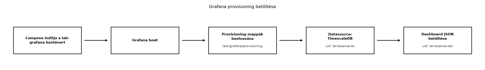

A TerraSense backend már fogadja a telemetriát, a TimescaleDB tárolja a nyers és aggregált adatokat. Az üzemeltető azonban nem fog minden kérdésre SQL-lel válaszolni: gyorsan látni akarja, hogy az üvegházban csökkent-e a hőmérséklet, mikor volt adathiány, és hogy az öntözőszelep állapota követi-e a talajnedvességet. A Grafana erre a megjelenítési rétegre épül rá: nem tárol, és nem módosítja az adatokat, hanem a meglévő forrásokra csatlakozik, és dashboardokat kínál. A dashboard ráadásul nemcsak vizualizáció: az Riasztás: szabályok, értesítés, riasztási fáradtság alfejezetben ugyanazokat a panel-lekérdezéseket használjuk majd riasztási szabályként, ezért érdemes a lekérdezéseket itt is gondosan kialakítani.
Definíció. (Provisioning.) A Grafana azon mechanizmusa, amely a konfigurációs állományokat (YAML/JSON) beolvasva automatikusan létrehozza az adatforrásokat, dashboardokat és más erőforrásokat. Ezzel a néhány kattintással összeállított dashboard is reprodukálható, verziókövethető és konténer-újraindítás után is azonos lesz.
Definíció. (Panel.) A dashboard egy vizualizációs egysége, amely legalább egy adatforrás-lekérdezésből származó adatsort jelenít meg kiválasztott típusban: idősor (time series), állapot, hőtérkép, stat vagy műszer (gauge).
Definíció. (Változó.) A dashboard szintű paraméter,
amelyet a Grafana a lekérdezésekbe $változó formában
illeszt be. A felhasználó a dashboard tetején választhat értéket,
például konkrét node-ot vagy site-ot.
A TerraSense esetében a Grafana a TimescaleDB adatforráson keresztül
éri el a telemetry, telemetry_hourly és
telemetry_daily táblákat/nézeteket. A Grafana SQL-makrói
közül kettőt használunk folyamatosan:
$__timeFilter(ts) a dashboard időtartományát adja át
WHERE feltételként;$__timeGroup(ts,'5m') időbeli bucketet (például 5
perces) hoz létre.Az alábbi ábra a provisioning betöltési útvonalát mutatja.

A konténer a host ~/iot-labor/i051/grafana-provisioning
mappáját mountolja a konténer /etc/grafana/provisioning
pontjára. A Grafana a datasources és
dashboards alkönyvtárakat figyeli, így a dashboard és az
adatforrás a konténer indulásakor automatikusan létrejön.
A megfelelő vizualizáció kiválasztása az adat jellegétől és az üzemeltetői kérdéstől függ. A TerraSense-ben az alábbi tipikus döntéseket hozzuk meg:
| Vizualizáció | Adat jellege | TerraSense-példa |
|---|---|---|
| Idősor (time series) | Folyamatos mérés, trend | Hőmérséklet, páratartalom |
| Stat | Egyetlen aktuális vagy utolsó érték | Utolsó hőmérséklet |
| Állapotsor (state timeline) | Diszkrét állapotváltozás | Szelep nyitva/zárva |
| Műszer (gauge) | Érték tartománnyal, küszöbbel | Talajnedvesség a 30–70% tartományban |
| Hőtérkép (heatmap) | Eloszlás vagy hiányzó adat | Napi mintaszám, adathiány |
Az idősor a leggyakoribb; a stat panel akkor hasznos, ha az utolsó
érték gyorsan kiolvasható, például egy vezénylői nézetben. A hőtérképet
akkor érdemes bevetni, amikor nem egyetlen érték, hanem a sűrűség vagy a
hiányzó adat a kérdés. A Megőrzés, ritkítás és
tárolási költség alfejezetben bevezetett
telemetry_hourly és telemetry_daily nézetek a
hosszú távú trendekhez és adathiány-észleléshez használandók, a nyers
telemetry tábla pedig a rövid távú, finom felbontású
panelekhez.
A labor előfeltétele az Idősoros adatbázisok és
adatmodellezés és a Megőrzés, ritkítás és
tárolási költség alfejezet elvégzése. A telemetry
hypertable, valamint a telemetry_hourly és
telemetry_daily nézetek meglévő, seedelt adatokkal
rendelkeznek. A telemetry_daily és
telemetry_hourly oszlopai a TerraSense-konvenció szerint:
bucket, node_id,
measurement_type, avg_value,
min_value, max_value,
sample_count.
Munkakönyvtár:
mkdir -p ~/iot-labor/i051/grafana-provisioning/datasources
mkdir -p ~/iot-labor/i051/grafana-provisioning/dashboards
cd ~/iot-labor/i051Hozd létre az alábbi három provisioning fájlt.
Először az adatforrás definíciója a
grafana-provisioning/datasources/datasources.yml fájlba. A
url a közös compose-hálózat lab-timescaledb
hostnevét használja, a hitelesítő adatok a labor-környezet céljaira
szolgálnak.
apiVersion: 1
datasources:
- name: TimescaleDB
type: postgres
access: proxy
uid: terrasense-ds
url: lab-timescaledb:5432
database: terrasense
user: ts
secureJsonData:
password: ts-lab-only
jsonData:
sslmode: disableA dashboard-provider a
grafana-provisioning/dashboards/dashboards.yml fájlba
kerül:
apiVersion: 1
providers:
- name: TerraSense
orgId: 1
folder: ""
type: file
disableDeletion: false
updateIntervalSeconds: 30
options:
path: /etc/grafana/provisioning/dashboardsA dashboard JSON-t a
grafana-provisioning/dashboards/dashboard.json fájlba
mentsd. A node változó a telemetry táblából
kérdezi le az elérhető node-okat, és multi értékű, így az
idősor panel az $node szerint ismételhető. Az idősor
panelekben a Grafana $__timeGroup(ts,'5m') makrója 5 perces
átlagot számít, a $__timeFilter(ts) pedig a dashboard
időtartományát szűri.
{
"title": "TerraSense – Üvegház monitor",
"uid": "terrasense-lab",
"refresh": "30s",
"time": {"from": "now-6h", "to": "now"},
"schemaVersion": 39,
"version": 1,
"templating": {
"list": [
{
"name": "node",
"label": "Node",
"type": "query",
"datasource": {"type": "postgres", "uid": "terrasense-ds"},
"definition": "SELECT node_id FROM telemetry GROUP BY node_id ORDER BY node_id LIMIT 50",
"query": "SELECT node_id FROM telemetry GROUP BY node_id ORDER BY node_id LIMIT 50",
"multi": true,
"sort": 1
}
]
},
"panels": [
{
"id": 1,
"type": "timeseries",
"title": "Hőmérséklet - $node",
"repeat": "node",
"gridPos": {"h": 8, "w": 12, "x": 0, "y": 0},
"fieldConfig": {
"defaults": {"unit": "celsius", "custom": {}},
"overrides": []
},
"targets": [
{
"refId": "A",
"datasource": {"type": "postgres", "uid": "terrasense-ds"},
"format": "time_series",
"query": "SELECT $__timeGroup(ts,'5m') AS time, avg(value) AS \"avg_temp\" FROM telemetry WHERE $__timeFilter(ts) AND node_id IN ($node) AND measurement_type = 'temperature' GROUP BY 1 ORDER BY 1"
}
]
},
{
"id": 2,
"type": "timeseries",
"title": "Páratartalom",
"gridPos": {"h": 8, "w": 12, "x": 12, "y": 0},
"fieldConfig": {
"defaults": {"unit": "percent", "custom": {}},
"overrides": []
},
"targets": [
{
"refId": "A",
"datasource": {"type": "postgres", "uid": "terrasense-ds"},
"format": "time_series",
"query": "SELECT $__timeGroup(ts,'5m') AS time, avg(value) AS \"avg_humi\" FROM telemetry WHERE $__timeFilter(ts) AND node_id IN ($node) AND measurement_type = 'humidity' GROUP BY 1 ORDER BY 1"
}
]
},
{
"id": 3,
"type": "timeseries",
"title": "Talajnedvesség",
"gridPos": {"h": 8, "w": 12, "x": 0, "y": 8},
"fieldConfig": {
"defaults": {"unit": "percent", "custom": {}},
"overrides": []
},
"targets": [
{
"refId": "A",
"datasource": {"type": "postgres", "uid": "terrasense-ds"},
"format": "time_series",
"query": "SELECT $__timeGroup(ts,'5m') AS time, avg(value) AS \"avg_soil\" FROM telemetry WHERE $__timeFilter(ts) AND node_id IN ($node) AND measurement_type = 'soil_moisture' GROUP BY 1 ORDER BY 1"
}
]
},
{
"id": 4,
"type": "stat",
"title": "Utolsó hőmérséklet",
"gridPos": {"h": 8, "w": 12, "x": 12, "y": 8},
"fieldConfig": {"defaults": {"unit": "celsius"}},
"targets": [
{
"refId": "A",
"datasource": {"type": "postgres", "uid": "terrasense-ds"},
"format": "table",
"query": "SELECT value AS \"last_temp\" FROM telemetry WHERE $__timeFilter(ts) AND node_id IN ($node) AND measurement_type = 'temperature' ORDER BY ts DESC LIMIT 1"
}
]
},
{
"id": 5,
"type": "timeseries",
"title": "Napi átlaghőmérséklet (telemetry_daily)",
"gridPos": {"h": 8, "w": 24, "x": 0, "y": 16},
"fieldConfig": {
"defaults": {"unit": "celsius", "custom": {}},
"overrides": []
},
"targets": [
{
"refId": "A",
"datasource": {"type": "postgres", "uid": "terrasense-ds"},
"format": "time_series",
"query": "SELECT bucket AS time, avg_value AS \"daily_avg_temp\" FROM telemetry_daily WHERE $__timeFilter(bucket) AND node_id IN ($node) AND measurement_type = 'temperature' ORDER BY 1"
}
]
}
]
}Egészítsd ki a közös ~/iot-labor/stack/compose.yaml
compose-fájlt a Grafana-szolgáltatással. A lab-grafana
konténer a ../i051/grafana-provisioning útvonalat
mountolja, mert a compose-fájl a stack mappában van, a
laborfájlok pedig az i051 mappában. A
GF_SECURITY_ADMIN_USER és
GF_SECURITY_ADMIN_PASSWORD kizárólag laborcélra szolgáló
érték.
lab-grafana:
image: grafana/grafana:11.2.0
container_name: lab-grafana
ports: ["3000:3000"]
environment:
GF_SECURITY_ADMIN_USER: lab-admin
GF_SECURITY_ADMIN_PASSWORD: lab-pass
volumes:
- ../i051/grafana-provisioning:/etc/grafana/provisioning
- lab-grafana-data:/var/lib/grafana
depends_on:
- lab-timescaledb
networks:
- labA compose-fájl volumes szekciójához add hozzá a
lab-grafana-data névvel jelölt kötetet.
volumes:
lab-grafana-data:Indítsd el a Grafanát, és ellenőrizd a konténer állapotát, majd a health endpointot:
cd ~/iot-labor/stack
docker compose up -d lab-grafana
sleep 5
docker compose ps lab-grafana
curl -s http://localhost:3000/api/healthVárt kimenet: a health-válasz JSON-objektum, amelyben a
database mező ok értékű. Ezután böngészőben
nyisd meg a http://localhost:3000 címet, jelentkezz be a
lab-admin / lab-pass hitelesítővel. A
Dashboards menüben válaszd a
TerraSense – Üvegház monitor dashboardot. A felső
Node választóban válaszd ki például a n001
értéket; a hőmérséklet-panel ismétlődik a kiválasztott node-ok szerint,
és minden panel a kiválasztott időtartomány adatait mutatja.
A labor takarítása a saját, névvel jelölt objektumokra korlátozódik:
cd ~/iot-labor/stack
docker compose rm -f lab-grafana
docker volume rm stack_lab-grafana-dataA provisioning hibáit a Grafana logjában érdemes keresni:
docker compose logs lab-grafana | grep -i provisioningA dashboard betöltését a böngészőn kívül hitelesítéssel is ellenőrizhetjük, de a laborban elegendő a health-check és a UI. Gyakori hibák és javításuk:
| Tünet | Ok | Javítás |
|---|---|---|
| A dashboard nem jelenik meg | A provisioning mappa mountolása rossz, vagy a dashboard JSON érvénytelen | Ellenőrizd a compose volumes-bejegyzést és a
JSON-érvényességet; docker compose logs lab-grafana |
| „No data” az idősor panelen | A $__timeFilter makró hiányzik, vagy az időtartomány
túl rövid |
Győződj meg arról, hogy a query-ben szerepel
$__timeFilter(ts), és bővítsd a dashboard time
tartományát |
| „PostgreSQL connection refused” | A Grafana nem éri el a lab-timescaledb konténert |
Ellenőrizd a közös compose-hálózatot és a depends_on
bejegyzést |
| A hőmérséklet nyers számként jelenik meg | A unit hiányzik a panel fieldConfig
részéből |
Állítsd be a unit: "celsius" vagy
"percent" értéket |
$__timeFilter(ts) nem kerül be a dashboard JSON
query mezőjébe, vagy a makró neve $timeFilter
(nem __) lesz. A Grafana így nyers $ jelet
küld a PostgreSQL-nek, amely szintaxishibát ad.$node esetén a lekérdezés
node_id = '$node' formát használ. Ahelyett, hogy a Grafana
automatikusan IN ('n001','n002')-vé bővítené, a string
interpoláció törése miatt hibás SQL jön létre. Helyesen:
node_id IN ($node) idézőjelek nélkül.telemetry táblát
kérdezik, és nem a Megőrzés, ritkítás és tárolási
költség folyamatos aggregátumait. Ez lassú és feleslegesen sok
pontot rajzol ki.ts mezőjének
UTC-jétől. A böngésző időzónája módosíthatja a tengelyfeliratokat; a
tárolt adat továbbra is UTC, ezért a pontos elemzésnél a dashboard
time zone beállítását érdemes UTC-re állítani.telemetry_daily nézetet a nyers
telemetry tábla helyett? Milyen vizualizációt választanál a
napi adathiány megjelenítésére?time_series formátumához SQL-lekérdezést, amely a Megőrzés, ritkítás és tárolási költség
telemetry_hourly nézetéből 7 napos átlaghőmérsékletet ad
vissza a gh1/n001 node-ra, a Grafana dashboard
időtartományát alkalmazva.dashboard.json fájlt egy heatmap-panelnel, amely a
telemetry_daily sample_count értékét
node_id és bucket szerint jeleníti meg, és
jelzi a napi 288 alatti mintaszámú adathiányt.syntax error at or near "$" hiba látható. Mi a hiba
valószínű oka, és hogyan javítanád?A telemetry_daily nézet már előre aggregálja az
átlagokat, így egy 1 éves trend sokkal kisebb adatmennyiségből
jeleníthető meg. A nyers tábla 30 napig őrzi csak meg a finom felbontású
adatokat. Az adathiányhoz heatmap-panel illik: az x tengely az idő, az y
tengely a node, a cella színe pedig a mintaszám vagy a hiányzó minták
száma.
A lekérdezés:
SELECT bucket AS time, avg_value AS "avg_temp"
FROM telemetry_hourly
WHERE $__timeFilter(bucket)
AND node_id = 'n001'
AND measurement_type = 'temperature'
ORDER BY 1A panel format mezője time_series
legyen.
A heatmap-panel mintája:
{
"id": 6,
"type": "heatmap",
"title": "Napi adathiány (sample_count < 288)",
"gridPos": {"h": 8, "w": 24, "x": 0, "y": 24},
"fieldConfig": {"defaults": {"unit": "short"}},
"targets": [
{
"refId": "A",
"datasource": {"type": "postgres", "uid": "terrasense-ds"},
"format": "time_series",
"query": "SELECT bucket AS time, node_id AS metric, CASE WHEN sample_count < 288 THEN 1 ELSE 0 END AS adathiány FROM telemetry_daily WHERE $__timeFilter(bucket) AND measurement_type = 'temperature' ORDER BY 1"
}
]
}A hiba oka általában az, hogy a Grafana nem helyettesíti a
$__timeFilter vagy $__timeGroup makrót, mert a
dashboard JSON query mezőjében a makró neve rossz, vagy a
query nem a Postgres adatforrás uid-jét használja. A
PostgreSQL a nyers $ karaktert elutasítja. Javítás:
ellenőrizd, hogy a target datasource.uid értéke
terrasense-ds, a makró neve pontosan
$__timeFilter(ts) vagy $__timeGroup(ts,'5m'),
és a JSON érvényes.
Az alfejezetben a TerraSense adataira építettünk Grafana-dashboardot.
A provisioning fájlok a
~/iot-labor/i051/grafana-provisioning mappában találhatók:
datasources/datasources.yml definiálja a
TimescaleDB-adatforrást terrasense-ds UID-del,
dashboards/dashboards.yml a fájlalapú dashboard-betöltést,
dashboards/dashboard.json pedig a
TerraSense – Üvegház monitor dashboardot
(uid: terrasense-lab). A dashboard node
multiváltozót használ, és a hőmérséklet-panel ismétlődik a kiválasztott
node-ok szerint. A panelek az Idősoros adatbázisok
és adatmodellezés telemetry tábláját és a Megőrzés, ritkítás és tárolási költség folyamatos
aggregátumait kérdezik le. Továbbvitt eredmény. A
dashboard.json panel-lekérdezéseit használja az Riasztás: szabályok, értesítés, riasztási fáradtság
alfejezet, a teljes TerraSense stack pedig a Záróprojekt során ezzel a Grafana-szolgáltatással
áll össze.
schemaVersion és a panel JSON-mezők
pontos neve a használt Grafana-verziótól függ, ellenőrizendő.$__timeFilter,
$__timeGroup és multiváltozós interpoláció pontos
szintaxisa az aktuális Grafana 11.x verzióban ellenőrizendő.time_bucket,
time_bucket_gapfill és folyamatos aggregátum view-k pontos
oszlopnevei a Megőrzés, ritkítás és tárolási
költség alfejezetben létrehozott nézetek szerint
ellenőrizendők.grafana/grafana:11.2.0 konténerkép létezése és a
11.2.0 verzió frissítési állapota ellenőrizendő.lab-admin / lab-pass hitelesítői
kizárólag a helyi laborrendszerhez tartoznak, éles környezetben
használni tilos.